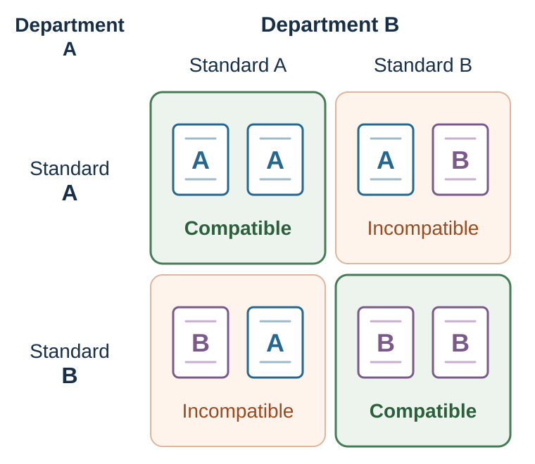

23 Strategic Interdependence: The Best Move Depends on Other Minds
A decision becomes strategic when its result depends not only on what you do, but also on what other people do in response.
Learning goals
- Represent a strategic situation using players, actions, payoffs, information, timing, repetition, and enforcement.
- Distinguish coordination, mixed motives, and escalation while separating equilibrium from welfare and advice.
- Redesign one strategic situation by changing communication, commitment, timing, monitoring, or exit.
Opening puzzle: meet me in Odense
You and another person must meet tomorrow in Odense. You cannot communicate. Write one exact place and one exact time. You receive the reward only if both answers match.
Your favorite café is not automatically a good answer. The central question is not, “Where would I like to go?” It is, “Where do I expect the other person to expect me to expect them to go?”
This small exercise exposes the change from individual choice to strategic choice. If each person chooses privately, an outcome can still become salient because of shared geography, habit, culture, or institutional prominence. The main station, city hall, noon, and 12:00 are not intrinsically coordinated outcomes. They can become focal points because both people expect them to stand out to both people (Schelling, 1960).
But focality is conditional. A long-term resident, an exchange student, a commuter, and a person with limited mobility may not share the same map. What coordinates one group can miscoordinate another. A focal point is therefore a hypothesis about shared expectations—not a universal property of an option.
First diagnose the strategic problem
Before choosing a move, identify the structure of dependence. The labels below are strategic archetypes, not mutually exclusive categories. Mixed motives combine cooperation and conflict; anti-coordination is a coordination family in which players benefit from taking different rather than matching roles. Let the specified payoffs determine which features coexist.

| Structure | What makes the problem strategic? | Typical failure | Useful first question |
|---|---|---|---|
| Coordination | Interests broadly align, but actions must match. | Miscoordination or incompatible standards. | What common signal or convention can both sides recognize? |
| Conflict | One side’s gain reduces the other’s payoff. | Hidden resistance, retaliation, or exploitation. | What will the other side do after my move? |
| Mixed motives | Cooperation creates value, while distribution creates conflict. | Failure to cooperate or a fight over who receives the gain. | Which part creates value, and which part allocates it? |
| Anti-coordination | Players benefit from choosing different roles or actions. | Collision, delay, duplication, or nobody volunteering. | How will roles be assigned or rotated? |
The same visible behavior can arise from different games. Two firms may keep prices high because costs increased, because demand changed, because they independently reached the same best response, or because they coordinated illegally. Two colleagues may remain silent because they agree, fear authority, expect the other to speak, or each hopes the other will bear the cost. Surface behavior does not identify the payoff structure or the beliefs behind it.
A game is a model, not the situation itself
A game is a mathematical representation of a strategic situation. At minimum, it specifies:
- Players: Who can act, and whose response matters?
- Actions or strategies: What can each player do?
- Payoffs: What does each player value under every combination of actions?
- Information: What does each player know, observe, or believe?
- Timing: Who moves when, and can later players observe earlier moves?
Payoffs need not be money. They may include safety, time, status, fairness, identity, reputation, legal exposure, regret, or future access. A payoff table does not prove that these motives are correctly measured. It makes the proposed motives inspectable.
Timing also changes the game. Simultaneous price choices differ from a market in which one firm moves first and the other observes. A one-shot interaction differs from a relationship with an uncertain end. A public action differs from a private one because reputation and sanction become possible.
The discipline is useful precisely because it exposes what has been assumed. If a recommendation changes after adding one absent stakeholder, one unobserved action, or one future response, the recommendation was never independent of those details.
See the game before solving it
Watch the linked strategic-interdependence scene from A Beautiful Mind. Before accepting the character’s solution, write the players, actions, payoffs, information, and timing. Then ask whose payoff is omitted and whether the proposed outcome is actually a Nash equilibrium. The scene is copyrighted fiction, so it is linked rather than reproduced; it is a model-building exercise, not evidence about how groups generally behave.
Best responses and Nash equilibrium
A best response is a strategy that gives a player the highest payoff against a specified strategy profile of the other players. In the two-player pure-action examples below, that reduces to choosing the best action against the other player’s stated action. A Nash equilibrium is a strategy profile—possibly including mixed strategies—such that no player can gain by deviating alone (Nash, 1950).
This definition is narrow and powerful. It asks whether an outcome is stable against unilateral deviation. It does not ask whether the outcome is fair, efficient, moral, legal, or likely to occur.
Consider a stylized price-war game. The numbers are illustrative profit units.
| Firm 1 Firm 2 | High price | Low price |
|---|---|---|
| High price | 10, 10 | 2, 15 |
| Low price | 15, 2 | 5, 5 |
If Firm 2 chooses a high price, Firm 1 earns 15 by choosing low rather than 10 by choosing high. If Firm 2 chooses low, Firm 1 earns 5 by choosing low rather than 2 by choosing high. Low is therefore Firm 1’s best response to either action. The same reasoning holds for Firm 2. The unique Nash equilibrium is low–low, with payoffs 5,5, even though both firms would earn more at high–high.
The matrix clarifies an incentive conflict. It does not establish that real firms face these payoffs. Nor does “cooperation” between competitors automatically improve welfare: coordinated high prices may benefit firms while harming consumers and violating competition law. Efficiency must be defined for everyone affected, not only the players shown in the matrix.
What equilibrium does—and does not—tell us
| Equilibrium can clarify | Equilibrium alone cannot establish |
|---|---|
| Whether each action is a best response to the others. | Whether players know the game or calculate correctly. |
| Whether an outcome is stable against one player’s deviation. | Whether the outcome is socially efficient or fair. |
| How predictions change when payoffs, information, or timing change. | Which equilibrium will be selected when several exist. |
| Which commitment or rule changes the strategic incentives. | Whether the specified payoffs capture actual motives. |
Behavioral game theory begins where the last column becomes unavoidable (Camerer, 2003). The next chapter asks how real people form beliefs and how many steps of strategic reasoning they use.
Mixed motives, anti-coordination, and escalation
Some games require coordination while leaving players in conflict over which coordinated outcome should prevail.
Game of chicken
Two drivers approach a one-lane bridge. Both prefer that one yields. Neither wants to be the one who yields, and collision is worst. Similar structures appear in market entry, diplomatic confrontation, deadline bargaining, and escalation.
Commitment can change beliefs: a visible first move, sunk capacity, an exclusive contract, or a public launch date may make one action credible. But commitment does not create value by itself. A rigid commitment can also force a collision.
Volunteer’s dilemma
Everyone benefits if at least one person bears the cost of acting, but each prefers that someone else acts. Calling an ambulance, reporting an error, interrupting misconduct, or taking an unwanted organizational role can have this structure. More potential helpers do not guarantee help; each may infer that someone else will act.
Battle of the Sexes—and turn taking
Two people prefer being together but disagree about the activity. Both coordinated outcomes are better than separation, yet distribution remains contested. In repeated versions of this structure, turn taking can create a Pareto improvement relative to persistent conflict. Rotation, lotteries, seniority, or a neutral tie-breaker can convert a distributional fight into a rule both sides can anticipate.
The lesson across these games is simple: “coordinate” is incomplete advice. Coordination must answer on what, by which rule, and with what distribution of burdens and gains.
Commitment changes the game
A credible commitment alters another player’s expectations because reversing course becomes costly, observable, or impossible. Schelling (1960) emphasized that deliberately limiting one’s future freedom can sometimes increase bargaining power.
The Ford Price Promise provides a useful stylized case. A promise to reimburse buyers if the recommended price later fell could reassure consumers who expected a future price cut. It also raised Ford’s cost of cutting price after the sale. If rivals adopted similar guarantees, the strategic incentives surrounding later price reductions could change. The case demonstrates how a customer promise may also operate as a competitive commitment. It does not by itself establish the policy’s market-wide causal effect; price-war remedies remain conditional on the competitive structure (Rao et al., 2000).
Commitment and escalation look similar from outside: both make retreat difficult. The difference is whether the remaining future benefit still justifies the constraint.
Ask four questions:
- What future response is the commitment intended to change?
- Is the commitment observable and credible to that audience?
- What flexibility is sacrificed if information changes?
- After removing sunk costs and face-saving, is continuation still better than exit?
The €50 auction: competition neglect becomes escalation
In Shubik’s dollar-auction game, the highest bidder wins the prize, but the second-highest bidder must also pay their final bid (Shubik, 1971). Early entry looks attractive. Once two people are competing, another small bid can appear cheaper than accepting a certain loss. Each expects that the next bid may make the rival quit. If both reason this way, bids can exceed the prize.
The game joins two failures:
- Competition neglect: entering without modeling rivals’ likely entry, persistence, and response.
- Escalation of commitment: continuing partly to justify an earlier choice after the forward-looking incentives have changed (Staw, 1976).
The auction is a mechanism demonstration, not evidence that every merger, litigation, war, or project overrun follows the same process. Field cases can also involve private information, reputation, real option value, agency problems, or changing fundamentals.
The practical defense is designed before entry: a reservation value, a stop rule based on future value rather than past expenditure, and an independent reviewer who is not defending the original decision.
Competitive acquisition creates a related trap. A bidder can value a target in isolation, then discover that the price is determined by rivals who saw the same target. When estimates contain common error, winning can be bad news: the winner may simply be the most optimistic bidder (Bazerman & Samuelson, 1983). Before bidding, separate private synergies from common value, model likely rival entry, and set a reservation price that does not rise merely because competition becomes visible.
Bargaining is also a coordination problem
Suppose two players simultaneously claim shares of a total surplus of 4. If their claims sum to at most 4, each receives their claim. If the claims exceed 4, both receive 0.
Many claim pairs are feasible, and many can be sustained by expectations. The game combines coordination—avoid incompatible claims—with distribution—who receives how much. A focal equal split may help, but entitlement, contribution, alternatives, procedure, and power can support other claims.
This is why a Pareto improvement can still be unfair. Efficiency asks whether someone can be made better off without making another worse off. Fairness asks how benefits, burdens, voice, and procedure should be distributed. Neither criterion eliminates the other.
Application: run a strategic audit before giving advice
When a strategic problem appears, use this sequence:
- Name the players. Include absent stakeholders, regulators, customers, and future selves whose responses matter.
- List actions. Include delay, exit, communication, delegation, and rule changes—not only the two visible moves.
- Specify payoffs. Separate money, relationship, status, fairness, legal exposure, and future options.
- Map information and timing. What is observed, believed, hidden, or learned later?
- Find best responses and equilibria. Use them as conditional benchmarks.
- Test alternative games. Would another plausible payoff or belief structure reverse the prediction?
- Change the game. Consider communication, sequencing, matching, guarantees, rotation, monitoring, commitment, or exit.
- Record a prediction. State whose behavior should change, by how much, and what result would count against the diagnosis.
Worked application: two departments need one reporting standard
Department A prefers a system integrated with its existing software. Department B prefers a more flexible platform. Both lose if they adopt incompatible systems.
Calling the disagreement “resistance to change” would personalize a coordination problem. A better design makes the game explicit:
- measure the payoff from compatibility separately from each system’s local quality;
- identify switching and training costs for both departments;
- create a joint pilot with the same evaluation criteria;
- use a pre-agreed tie-breaker if results are close;
- compensate concentrated transition costs rather than pretending they do not exist;
- preserve an exit or review point if the common standard fails.
The goal is not merely agreement. It is an agreement whose coordination benefit survives implementation.
Ethics: cooperation for whom, commitment against whom?
Strategic competence can create value, but it can also make exploitation more effective.
- Competitors can coordinate to raise prices at customers’ expense.
- A focal norm can exclude people who do not share the dominant group’s history.
- A commitment can protect a joint plan or coerce the other side by making harm inevitable.
- Reputation systems can support trust or punish dissent and trap people in stale labels.
- Institutions can solve a dilemma for insiders while moving costs to outsiders.
The ethical test is not whether the strategy reaches equilibrium. Ask who is included in the payoff table, whether material facts and alternatives remain visible, whether refusal is meaningful, and whether the rule would remain defensible if affected people understood how it worked.
Practice Lab
Map a live supplier, departmental, or platform interaction. Produce a strategic map listing players, actions, material and social payoffs, information, timing, repetition, enforcement, and outsiders. Draw one baseline payoff table and identify best responses. Change exactly one rule—communication, timing, monitoring, commitment, rotation, or exit—and state the observable behavioral change the redesign predicts.
Take it forward
- Use this when advice to one actor changes what another actor can profitably or safely do.
- Do not infer that an equilibrium is efficient, fair, inevitable, or the game people believe they are playing.
- Try this next by changing one element of the strategic map and predicting how the response pattern should move.
References cited in this chapter
Bazerman, M. H., & Samuelson, W. F. (1983). I won the auction but don’t want the prize. Journal of Conflict Resolution, 27(4), 618–634. https://doi.org/10.1177/0022002783027004003
Camerer, C. F. (2003). Behavioral game theory: Experiments in strategic interaction. Princeton University Press.
David, P. A. (1985). Clio and the economics of QWERTY. American Economic Review, 75(2), 332–337.
Liebowitz, S. J., & Margolis, S. E. (1990). The fable of the keys. Journal of Law & Economics, 33(1), 1–25.
Nash, J. F. (1950). Equilibrium points in n-person games. Proceedings of the National Academy of Sciences, 36(1), 48–49.
Rao, A. R., Bergen, M. E., & Davis, S. (2000). How to fight a price war. Harvard Business Review, 78(2), 107–116.
Schelling, T. C. (1960). The strategy of conflict. Harvard University Press.
Shubik, M. (1971). The dollar auction game: A paradox in noncooperative behavior and escalation. Journal of Conflict Resolution, 15(1), 109–111.
Smith, V. L. (1962). An experimental study of competitive market behavior. Journal of Political Economy, 70(2), 111–137. https://doi.org/10.1086/258609
Skyrms, B. (2004). The stag hunt and the evolution of social structure. Cambridge University Press.
Staw, B. M. (1976). Knee-deep in the Big Muddy: A study of escalating commitment to a chosen course of action. Organizational Behavior and Human Performance, 16(1), 27–44.